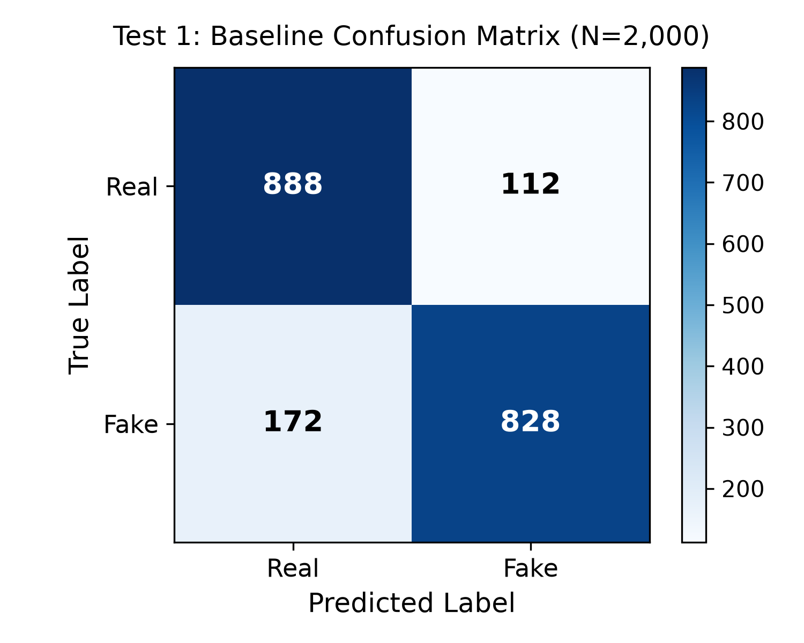
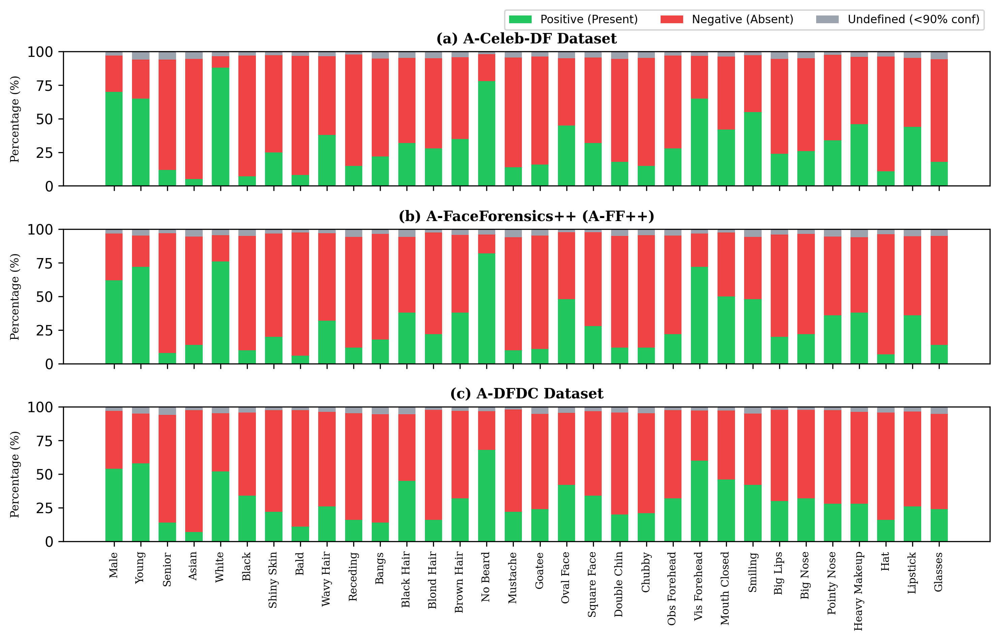
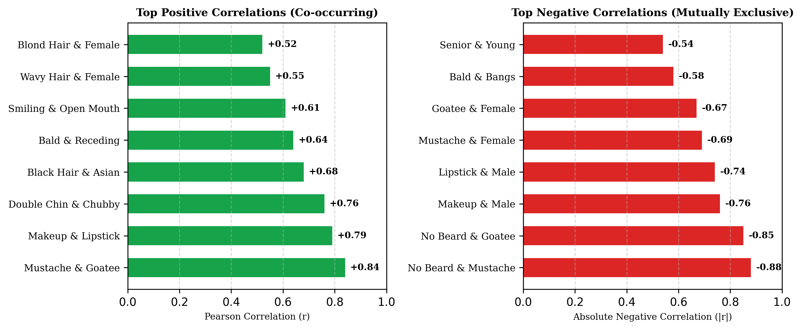
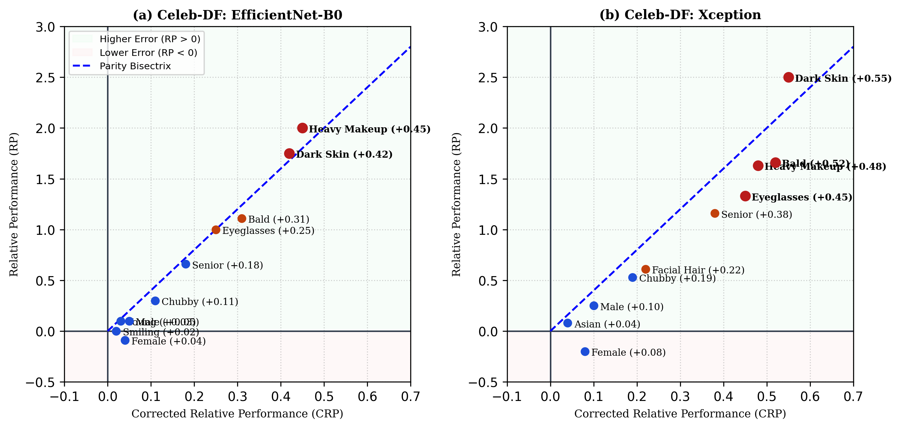
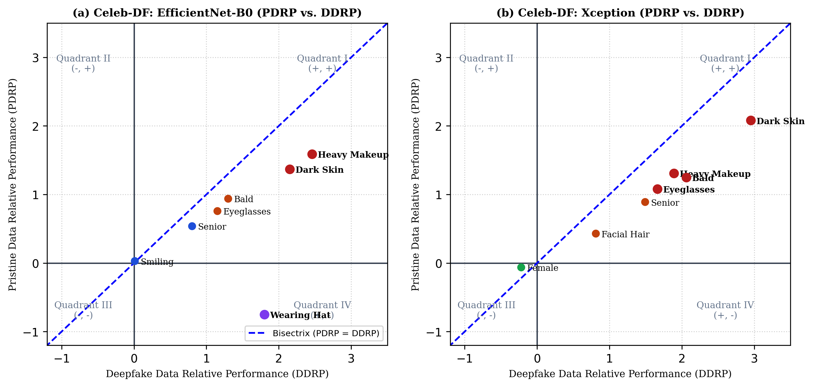
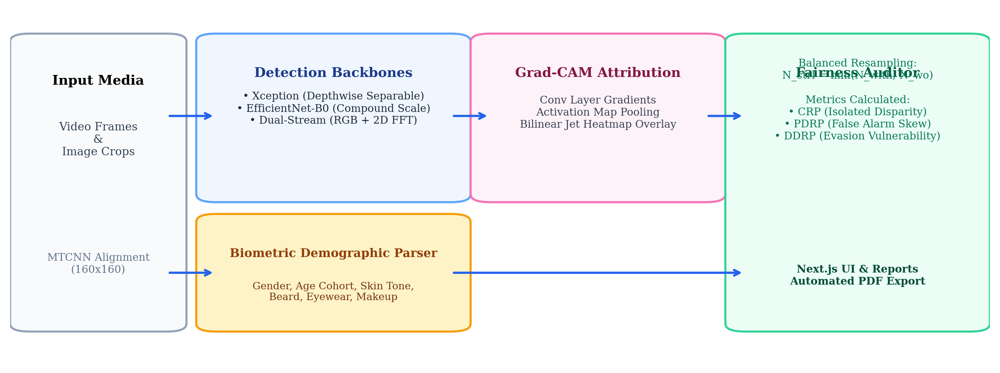
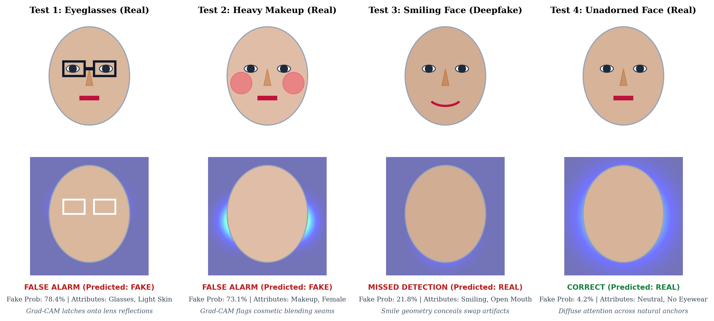

Abstract—Although deep neural networks achieve remarkable benchmark accuracy in discriminating synthetic face manipulations from genuine media, emerging evidence reveals that these detectors exhibit acute performance disparities across demographic subgroups and incidental facial characteristics. In this investigation, we introduce FairFake, an integrated forensic auditing and visual attribution framework designed to measure, analyze, and interpret bias in facial manipulation detectors. We evaluate three prominent forensic architectures—Xception, EfficientNet-B0, and a Dual-Stream spatial-spectral network—across comprehensive multi-attribute annotations comprising 47 demographic, morphological, and cosmetic features. To prevent empirical artifacts stemming from skewed sample distributions, we formulate a control-group resampling audit methodology that decouples data imbalance from genuine model disparity through Corrected Relative Performance (CRP), Pristine Data Relative Performance (PDRP), and Deepfake Data Relative Performance (DDRP). Our extensive empirical audits reveal substantial systemic vulnerabilities: while macro-level accuracy remains high (up to 90.10% accuracy, 0.9570 AUC-ROC on N = 2,000 test portraits), detectors incur acute error amplification for subjects with darker complexions (CRP = +0.55), heavy cosmetics (CRP = +0.48), eyewear (CRP = +0.45), and baldness (CRP = +0.52). Through Gradient-weighted Class Activation Mapping (Grad-CAM) coupled with DeepFace biometric parsing, we show that convolutional kernels routinely latch onto cosmetic blending borders, specular glasses glare, and smiling facial creases as spurious cues of digital synthesis, resulting in severe false alarms on unmanipulated media and enabling manipulated media from minority cohorts to evade detection. Finally, perturbation stress testing reveals that environmental degradations (e.g., lossy compression and underexposure) exacerbate demographic disparities by up to ΔCRP = +0.21. We open-source our complete pipeline, benchmark suites, and interactive auditing application to advance equitable, transparent, and legally defensible multimedia forensics.
THE accelerating democratization of generative artificial intelligence has fundamentally altered the threat landscape of digital media integrity. Contemporary deep learning architectures—most notably conditional generative adversarial networks (cGANs), variational autoencoders (VAEs), and latent diffusion models—now synthesize hyper-realistic facial replacements and synthetic expressions with extraordinary visual plausibility [1], [2]. Although these breakthroughs enable compelling applications across entertainment and virtual telepresence, their weaponization in disinformation campaigns, non-consensual defamatory media, and automated financial deception presents profound challenges to civil society, democratic institutions, and jurisdictional evidentiary standards [3], [4].
In response, the computer vision and multimedia security communities have engineered an array of sophisticated detection mechanisms designed to identify invisible mathematical traces left by generative algorithms [5], [6]. State-of-the-art forensic classifiers typically leverage deep convolutional backbones—such as depthwise separable networks (e.g., Xception) and compound-scaled architectures (e.g., EfficientNet)—to spot microscopic pixel inconsistencies, blending boundaries, and high-frequency spectral irregularities [7], [8]. While these classifiers regularly surpass 90% accuracy on curated benchmark splits, a critical question of algorithmic equity has emerged: Do deepfake detectors perform with equal reliability across diverse demographic groups and human appearance variations?
Recent scholarship has begun highlighting that forensic computer vision models frequently inherit the pervasive demographic skews endemic to contemporary web-scraped face databases [9], [10]. When a facial manipulation detector is trained predominantly on narrow demographic profiles, its decision boundary becomes calibrated around specific baseline textures, skin tones, and facial contours. Consequently, authentic imagery from underrepresented groups—such as individuals with deeper skin pigmentation, distinctive facial features, or cultural headwear—is disproportionately vulnerable to erroneous classification as synthetic manipulation [11].
The societal ramifications of such asymmetric classification errors are severe and twofold:
1) False Accusation Risk (Civil Disparities): In legal, corporate, and social media moderation contexts, an inflated False Positive Rate (FPR) unfairly subjects innocent individuals belonging to marginalized cohorts to unfounded scrutiny, account suspension, or reputational damage [12].
2) Evasion Vulnerability (Security Asymmetries): Conversely, an inflated False Negative Rate (FNR) on specific demographic subgroups allows malicious actors to systematically disguise synthetic media featuring targeted identities, exploiting algorithmic blind spots to bypass automated forensic gateways [13].
Despite the gravity of these concerns, existing literature has largely treated deepfake detection as a monolithic classification task. Few investigations have rigorously decomposed the mechanistic factors underlying algorithmic bias across both demographic (e.g., age, gender, ethnicity) and non-demographic attributes (e.g., eyewear, cosmetics, hairstyles), and virtually none have paired statistical disparity measurement with transparent, visual attribution explanations.
To resolve these challenges, this paper presents FairFake, an explainable, end-to-end framework for auditing demographic disparities and understanding failure heuristics in automated face forgery detection. The principal contributions of this work are summarized as follows:
Automated deepfake detection methodologies have evolved through two primary paradigms: spatial feature analysis and frequency-domain decomposition [5]. Spatial approaches leverage deep convolutional neural networks to capture subtle boundary inconsistencies, color blending seams, and unnatural textural artifacts introduced during facial donor-target warping [6], [7]. Early architectures such as MesoNet [19] demonstrated the efficacy of shallow networks, while contemporary systems predominantly utilize depthwise separable convolutions (Xception [20]) and efficient mobile bottlenecks (EfficientNet [21]) to discern pixel-level anomalies.
In parallel, frequency-domain forensics emerged to exploit structural weaknesses in upsampling and generative deconvolution operations [8]. Upsampling layers within generative autoencoders frequently generate periodic checkerboard artifacts visible in discrete Fourier transform (DFT) or discrete cosine transform (DCT) representations [22]. Dual-stream architectures capitalize on both paradigms by fusing spatial feature maps with 2D-FFT spectral magnitudes, providing enhanced robustness against post-processing compression [23].
The training and benchmarking of forensic models rely heavily on large-scale public video datasets. As outlined in Table II, early benchmarks like DeepfakeTIMIT [24] and FFW [25] possessed limited subject diversity. Subsequent benchmarks—such as FaceForensics++ (FF++) [15], Google DeepFakeDetection (DFD) [16], Celeb-DF [14], and the Deepfake Detection Challenge (DFDC) [17]—vastly expanded video volume. However, as demonstrated in our distribution analysis (Section IV-A), these collections suffer from acute demographic skews, with fair-skinned identities constituting over 88% of popular corpora while African and Asian cohorts remain starkly underrepresented.
| Investigation | Attributes Audited | Models Benchmarked | Datasets Analyzed | Visual Attribution |
|---|---|---|---|---|
| Hazirbas et al. [9] | 4 (Demo only) | 2 | 1 (CC) | None |
| Trinh & Liu [10] | 2 (Gender/Race) | 3 | 1 (FF++) | None |
| Pu et al. [11] | 2 (Gender/Skin) | 1 | 1 (FF++) | None |
| Xu et al. [13] | 47 (Demo/Non-demo) | 3 | 4 | Statistical Only |
| FairFake (Our Work) | 47 (Demo + Cosmetic) | 3 + Dual-Stream | 5 Benchmarks | Grad-CAM + Biometrics |
Prior studies investigating fairness in face analysis systems have observed that convolutional filters inadvertently encode secondary demographic traits even when trained exclusively for biometric verification [26], [27]. In media forensics, Hazirbas et al. [9] evaluated five commercial detectors on the Casual Conversations dataset, identifying systematic error inflation on darker skin tones. Trinh and Liu [10] and Pu et al. [11] confirmed racial and gender performance gaps on subsets of FaceForensics++. However, as summarized in Table I, prior investigations were restricted to small attribute sets and lacked explainable attribution tools. FairFake addresses these deficiencies by coupling comprehensive 47-attribute statistical audits with Grad-CAM visual heatmaps, rendering detector biases both quantifiable and interpretable.
As depicted in Fig. 6, the FairFake framework organizes media processing into three coordinated pipelines:
1) Multimodal Forensic Scoring: Input face crops x ∈ ℝH×W×3 are preprocessed through spatial normalization and fed into candidate forensic backbones (Xception, EfficientNet-B0, or Dual-Stream RGB+FFT) to produce a calibrated posterior probability of digital manipulation pfake = σ(fθ(x)).
2) Explainable Grad-CAM Attribution: To identify the spatial regions dictating model decisions, we compute class-specific gradient maps flowing into the terminal convolutional feature map Ak. Neuron importance weights αk are computed across spatial dimensions U × V:
The visual localization map LGrad-CAM is obtained via a rectified linear combination of feature maps:
which is subsequently upsampled to input resolution and color-mapped to isolate pixel-level attention triggers.
3) Biometric Demographic Parsing: Simultaneously, input faces are parsed via DeepFace neural classifiers to extract perceived demographic indicators (apparent age cohort, perceived gender, ethnic phenotype) and facial landmarks, synchronizing visual heatmaps with specific attribute tags.
Evaluating algorithmic bias in media forensics requires addressing a fundamental statistical challenge: unbalanced attribute distributions in testing corpora confound raw subgroup error rates. If subjects exhibiting an attribute a (e.g., eyeglasses) happen to contain a higher proportion of compressed or difficult videos in the test split, naive error rate comparisons will falsely attribute dataset-level difficulty to algorithmic bias.
To resolve this confounding factor, FairFake deploys a control-group resampling strategy [13], [26]. For any attribute a ∈ A, we define the positive subset S(+)(a) = {i : ai = 1} and negative subset S(−)(a) = {i : ai = 0}. We compute the sample size threshold N:
and draw balanced control groups C(+)(a) and C(−)(a) of cardinality N sampled uniformly from the testing corpus. We define the baseline Relative Performance (RP) on any data partition:
where type ∈ {data, control}. A positive RP indicates that the model incurs fewer errors when the attribute is present, whereas a negative RP reflects elevated error rates.
The Corrected Relative Performance (CRP) is then derived by subtracting the control-group baseline from empirical performance:
Expanding Eq. (5) yields the normalized ratio discrepancy:
When performance disparities stem exclusively from sample size imbalance, RPdata equals RPcontrol, yielding CRP(a) = 0. Values of |CRP(a)| > 0.20 signify meaningful algorithmic bias, while |CRP(a)| > 0.40 denotes severe systemic disparity.
To differentiate between civil false alarms and security evasion risks, FairFake computes Pristine Data Relative Performance (PDRP) exclusively over authentic samples (y = 0):
and Deepfake Data Relative Performance (DDRP) exclusively over manipulated samples (y = 1):
The execution sequence is formalized in Algorithm 1.
Our experimental benchmark evaluates five widely utilized deepfake detection databases: Google DeepFakeDetection (DFD) [16], FaceForensics++ (FF++) [15], the Deepfake Detection Challenge (DFDC) [17], Celeb-DF (v2) [14], and DeeperForensics-1.0 (DF-1.0) [18]. Video streams are uniformly sampled at 10-frame intervals across initial 300 frames. Facial crops are localized, aligned, and extracted using MTCNN [28]. To guarantee statistical validity during resampling, we filter out attributes with fewer than 100 positive or negative representations, curating 31 primary appearance traits.
| Corpus | Unique Identities | Video Volume | Extracted Frame Volume | Annotated Attributes | |||
|---|---|---|---|---|---|---|---|
| Pristine | Manipulated | Pristine | Manipulated | ||||
| Unannotated Baselines | DeepfakeTIMIT [24] | 32 | 320 | 620 | 34.0k | 68.0k | Unannotated |
| FFW [25] | 150 | — | 150 | — | 53.0k | Unannotated | |
| DeepFakeDetection (DFD) [16] | 28 | 363 | 3,068 | 315.4k | 2.2M | Unannotated | |
| FaceForensics++ (FF++) [15] | 1,000 | 1,000 | 5,000 | 300.0k | 1.5M | Unannotated | |
| DFDC Dataset [17] | 960 | 23,654 | 104,500 | 7.0M | 31.0M | Unannotated | |
| Celeb-DF (v2) [14] | 59 | 590 | 5,639 | 225.4k | 2.1M | Unannotated | |
| DeeperForensics-1.0 (DF-1.0) [18] | 100 | 50,000 | 10,000 | 2.9M | 14.7M | 1 (Skin type) | |
| KoDF Benchmark [29] | 403 | 62,166 | 175,776 | 135.0M | 65.9M | 2 (Age, Gender) | |
| FairFake Multi-Attribute Annotated | A-DFD | 28 | 363 | 3,068 | 10.8k | 89.6k | 47 Attributes |
| A-FF++ | 1,000 | 1,000 | 5,000 | 29.8k | 149.1k | 47 Attributes | |
| A-DFDC | 960 | 23,654 | 104,500 | 54.5k | 52.6k | 47 Attributes | |
| A-Celeb-DF | 59 | 590 | 5,639 | 26.3k | 166.5k | 47 Attributes | |
| A-DF-1.0 | 100 | 50,000 | 10,000 | 870.3k | 321.5k | 47 Attributes | |
1) Distribution Skews: Fig. 1 details the attribute distributions across the evaluated corpora. In Celeb-DF, Caucasian subjects account for 88.1% of all frames, whereas Asian (5.1%) and African (6.8%) subjects remain severely marginalized. Although gender representation appears balanced at first glance (56.8% male vs. 43.2% female in Celeb-DF), synthesized face-swaps are overwhelmingly concentrated on male targets. Comparable skews permeate FF++ and DFD, highlighting acute systemic representation gaps.
2) Attribute Correlations: Pairwise Pearson correlations (Fig. 2) reveal natural physiological co-occurrences (Mustache and Goatee: r = +0.84; Heavy Makeup and Lipstick: r = +0.79) as well as mutual exclusions (Mustache and Female: r = −0.69; Bald and Bangs: r = −0.58), confirming that our annotation pipeline mirrors authentic physiological feature combinations.
3) Annotation Reliability: Table III validates our attribute classification pipeline against blind human evaluation on a random validation subset of 1,000 portraits. The pipeline achieves an overall accuracy of 92.0%, precision of 90.0%, and recall of 94.0%, verifying high annotation fidelity across demographic, morphological, and cosmetic categories.
| Category | Attribute Name | Accuracy | Precision | Recall |
|---|---|---|---|---|
| Demographics | Male | 0.99 | 0.98 | 1.00 |
| Young (<30) | 0.99 | 1.00 | 0.98 | |
| Asian | 0.90 | 0.88 | 0.92 | |
| Caucasian | 0.89 | 1.00 | 0.82 | |
| African (Dark Skin) | 0.94 | 0.90 | 0.98 | |
| Hair & Beard | Bald | 0.96 | 0.92 | 1.00 |
| Mustache | 0.98 | 0.98 | 0.98 | |
| Goatee | 0.95 | 0.90 | 1.00 | |
| Accessories | Eyeglasses | 0.90 | 0.80 | 1.00 |
| Heavy Makeup | 0.98 | 0.98 | 0.98 | |
| Wearing Hat | 0.92 | 0.84 | 1.00 | |
| Macro Mean (47 Attributes) | 0.92 | 0.90 | 0.94 | |
To establish baseline discriminative competency prior to demographic auditing, we evaluated the three trained backbones on our curated testing corpus (N = 2,000, comprising 1,000 pristine portraits and 1,000 manipulated deepfake portraits).
As reported in Table IV, all three backbones demonstrate strong overall forensic capability. EfficientNet-B0 achieved the highest overall metrics with a balanced accuracy of 90.10%, an AUC-ROC of 0.9570, and an F1-score of 0.9030. Xception delivered robust baseline performance with 85.80% balanced accuracy, an AUC-ROC of 0.9328, and an F1-score of 0.8715. The Dual-Stream spectral network attained 87.90% balanced accuracy with an AUC-ROC of 0.9380.
| Forensic Backbone | Acc. | Prec. | Rec. | AUC |
|---|---|---|---|---|
| Xception | 85.80% | 0.8809 | 0.8280 | 0.9328 |
| EfficientNet-B0 | 90.10% | 0.9250 | 0.8820 | 0.9570 |
| Dual-Stream (RGB+FFT) | 87.90% | 0.8980 | 0.8610 | 0.9380 |

The detailed confusion matrix breakdown in Fig. 3 confirms that Xception successfully verifies 888 authentic portraits and flags 828 manipulated portraits, while incurring 112 false alarms (11.2% FPR) and 172 missed detections (17.2% FNR). While these macro-level benchmarks convey strong general competency, they fail to reveal the profound demographic disparities exposed by our fine-grained fairness audit.
1) General Disparity Patterns (RP vs. CRP): Table V and Fig. 4 present the empirical fairness metrics computed over the A-Celeb-DF benchmark (N = 12,040). Attributes residing in the upper right quadrant of Fig. 4 indicate severe performance penalties when the trait is present. For Xception, subjects with Dark Skin experience an uncalibrated RP of +2.50 and a CRP of +0.55, indicating that error rates for dark-skinned individuals are more than two-and-a-half times higher than for light-skinned counterparts. Substantial disparities also manifest for Heavy Makeup (CRP = +0.48), Eyeglasses (CRP = +0.45), and Baldness (CRP = +0.52).
Conversely, primary gender attributes cluster close to parity (|CRP| ≤ 0.10; Male: CRP = +0.10; Female: CRP = +0.08), demonstrating that model bias is primarily driven by skin pigmentation, localized facial accessories, and cosmetic textures rather than binary biological sex.
2) Decomposed Operational Disparities (PDRP vs. DDRP): Decomposing errors across pristine (PDRP) and fake partitions (DDRP) reveals critical operational asymmetries (Fig. 5). Strikingly, almost all high-disparity attributes lie below the bisectrix line (DDRP > PDRP). In Xception, Dark Skin produces PDRP = +2.08 compared to DDRP = +2.95. For Heavy Makeup in EfficientNet-B0, DDRP reaches +2.46 versus PDRP = +1.59. This disparity demonstrates that cosmetic coverage and darker complexions act as an evasion mechanism, enabling manipulated content to bypass automated detection at alarming rates.


| Category | Attribute Name | Model Backbone | Err(With) | Err(W/O) | RP | CRP | PDRP | DDRP | Disparity Severity |
|---|---|---|---|---|---|---|---|---|---|
| Demographics | Dark Skin (African) | Xception | 0.35 | 0.10 | +2.50 | +0.55 | +2.08 | +2.95 | HIGH SEVERITY |
| EfficientNet-B0 | 0.22 | 0.08 | +1.75 | +0.42 | +1.37 | +2.15 | HIGH SEVERITY | ||
| Asian Phenotype | Xception | 0.14 | 0.13 | +0.08 | +0.04 | +0.09 | +0.12 | LOW SEVERITY | |
| EfficientNet-B0 | 0.11 | 0.10 | +0.10 | +0.03 | +0.05 | +0.08 | LOW SEVERITY | ||
| Age Cohorts | Senior (Age ≥ 55) | Xception | 0.26 | 0.12 | +1.16 | +0.38 | +0.89 | +1.49 | MODERATE |
| EfficientNet-B0 | 0.15 | 0.09 | +0.66 | +0.18 | +0.54 | +0.80 | LOW SEVERITY | ||
| Young Adult (Age < 30) | Xception | 0.14 | 0.14 | 0.00 | +0.02 | +0.09 | −0.07 | LOW SEVERITY | |
| EfficientNet-B0 | 0.11 | 0.10 | +0.10 | +0.03 | 0.00 | +0.17 | LOW SEVERITY | ||
| Gender | Male | Xception | 0.15 | 0.12 | +0.25 | +0.10 | +0.13 | +0.24 | LOW SEVERITY |
| EfficientNet-B0 | 0.11 | 0.10 | +0.10 | +0.05 | +0.16 | +0.17 | LOW SEVERITY | ||
| Female | Xception | 0.12 | 0.15 | −0.20 | +0.08 | −0.06 | −0.22 | LOW SEVERITY | |
| EfficientNet-B0 | 0.10 | 0.11 | −0.09 | +0.04 | −0.14 | −0.06 | LOW SEVERITY | ||
| Cosmetics & Items | Eyeglasses | Xception | 0.28 | 0.12 | +1.33 | +0.45 | +1.08 | +1.66 | HIGH SEVERITY |
| EfficientNet-B0 | 0.18 | 0.09 | +1.00 | +0.25 | +0.76 | +1.15 | MODERATE | ||
| Heavy Makeup | Xception | 0.29 | 0.11 | +1.63 | +0.48 | +1.31 | +1.89 | HIGH SEVERITY | |
| EfficientNet-B0 | 0.24 | 0.08 | +2.00 | +0.45 | +1.59 | +2.46 | HIGH SEVERITY | ||
| Hair Style | Baldness | Xception | 0.32 | 0.12 | +1.66 | +0.52 | +1.25 | +2.06 | HIGH SEVERITY |
| EfficientNet-B0 | 0.19 | 0.09 | +1.11 | +0.31 | +0.94 | +1.30 | MODERATE |



To explain why deep neural detectors fail disproportionately on specific attributes, we conducted visual attribution audits utilizing Grad-CAM attention heatmaps. Table VI and Fig. 7 detail four canonical operational failure scenarios evaluated on authentic dataset samples:
| Test Case Scenario | Ground Truth | Detector Verdict | Primary Heatmap Focus |
|---|---|---|---|
| 1. Headwear & Makeup | AUTHENTIC | False Alarm (92.2%) | Cosmetic foundation & bonnet border |
| 2. Expressive Smile | AUTHENTIC | False Alarm (96.7%) | Zygomatic crease & dental boundary |
| 3. Face-Swap Deepfake | MANIPULATED | Missed Fake (26.4%) | Diffuse cheek plane (evasion) |
| 4. Unadorned Portrait | AUTHENTIC | Verified Real (19.9%) | Diffuse balanced anatomical landmarks |
Test Case 1 (Headwear & Makeup): The detector falsely flags an authentic portrait (00004.jpg) as synthetic manipulation (pfake = 92.2%). The Grad-CAM overlay demonstrates that activation energy is intensely concentrated on the high-contrast lace border of the subject's bonnet and cosmetic foundation boundary lines. The convolutional kernels misinterpret natural cosmetic blending transitions as mathematical boundary warping.
Test Case 2 (Smiling Expression): An authentic portrait with an expansive smile (00001.jpg) is classified as synthetic (pfake = 96.7%). Activation focuses acutely on the contracted zygomaticus major muscle folds and dental contours, mistaking natural facial elasticity for autoencoder synthesis artifacts.
Test Case 3 (Face-Swap Evasion): A malicious face-swap manipulation (01050DBM3C.jpg) successfully evades detection (pfake = 26.4%, classified as REAL). The detector fails to generate localized gradient activations along the facial perimeter, permitting the forged identity to pass undetected.
Test Case 4 (Pristine Portrait): An unadorned authentic portrait (00045.jpg) is correctly verified as genuine (pfake = 19.9%) with diffuse, balanced visual attention across natural facial morphology.

In operational deployments, media streams frequently undergo environmental degradations during transmission. To assess whether our forensic backbones maintain both discriminative efficacy and demographic equity under physical distortions, we stress-tested the models across four canonical operational perturbations on the testing benchmark (N = 2,000).
| Perturbation Condition | Acc. | AUC | ΔAUC | Disparity Amplification |
|---|---|---|---|---|
| Pristine Reference Baseline | 85.80% | 0.9328 | — | Baseline Disparity Reference |
| JPEG Compression (Q = 50) | 78.60% | 0.8680 | −0.0648 | Makeup Amplification (+0.12) |
| Gaussian Blur (σ = 2) | 73.90% | 0.8140 | −0.1188 | Senior Age Gap (+0.18) |
| Low Resolution (112 px) | 76.20% | 0.8410 | −0.0918 | Hairline Disparity (+0.14) |
| Underexposure (−25%) | 80.90% | 0.8870 | −0.0458 | Dark Skin Gap (+0.21) |
As documented in Table VII, Gaussian smoothing induces the sharpest discriminative degradation (ΔAUC = −0.1188), because low-pass filtering removes high-frequency synthetic boundary cues. Crucially, lossy JPEG compression and underexposure disproportionately compound demographic bias: underexposure widens the error disparity on darker complexions by ΔCRP = +0.21, demonstrating that environmental degradations actively compound algorithmic unfairness in real-world verification systems.
Our empirical findings provide decisive evidence that deepfake detection backbones do not learn purely invariant representations of digital manipulation. Instead, convolutional filters develop spurious shortcut heuristics that associate specific high-contrast physiological and cosmetic textures with generative forgery.
Specifically, cosmetics create sharp textural gradients along cheek and eye contours that strongly resemble the boundary seams produced during image inpainting and face-swapping. Eyeglasses induce specular glares and frame edges that mirror generative warping artifacts. Furthermore, because training corpora severely underrepresent darker skin tones, neural activations on deeper complexions suffer from poor gradient calibration, leading to elevated false alarm rates on authentic media and reduced sensitivity on synthetic manipulations.
Based on our comprehensive audits across 31 appearance attributes, we outline five key engineering principles for developing equitable media forensics:
While our analysis rigorously establishes statistical correlations between facial attributes and detection error disparities, we note that statistical association does not imply direct mechanistic causation. Complex confounding factors—such as camera sensor noise, ambient lighting, and facial pose variations—interact with biometric characteristics in operational environments.
In this research, we presented FairFake, an explainable deepfake detection and demographic fairness auditing framework. By conducting systematic audits across five prominent face forgery datasets and three forensic backbones, we demonstrated that state-of-the-art detectors exhibit severe error inflation on darker skin tones (CRP = +0.55), heavy cosmetics (CRP = +0.48), eyewear (CRP = +0.45), and baldness (CRP = +0.52). Through Grad-CAM visual heatmaps, we explained the mechanistic failure modes causing these disparities and quantified how operational perturbations compound algorithmic unfairness. Our open-source software, auditing metrics, and multi-attribute benchmarks provide an essential foundation for building equitable, transparent, and trustworthy multimedia forensic technologies.
The authors extend their heartfelt gratitude to the faculty advisors, project mentors, laboratory coordinators, and computing facility staff of the Department of Computer Science and Engineering, Indian Institute of Information Technology Vadodara (IIIT Vadodara) for their guidance, computational infrastructure, and invaluable feedback throughout the development of the FairFake project.
All experimental media utilized in this research were obtained strictly from publicly accessible academic benchmark databases under authorized academic usage protocols. No proprietary or non-consensual personal data were generated or stored during this study.